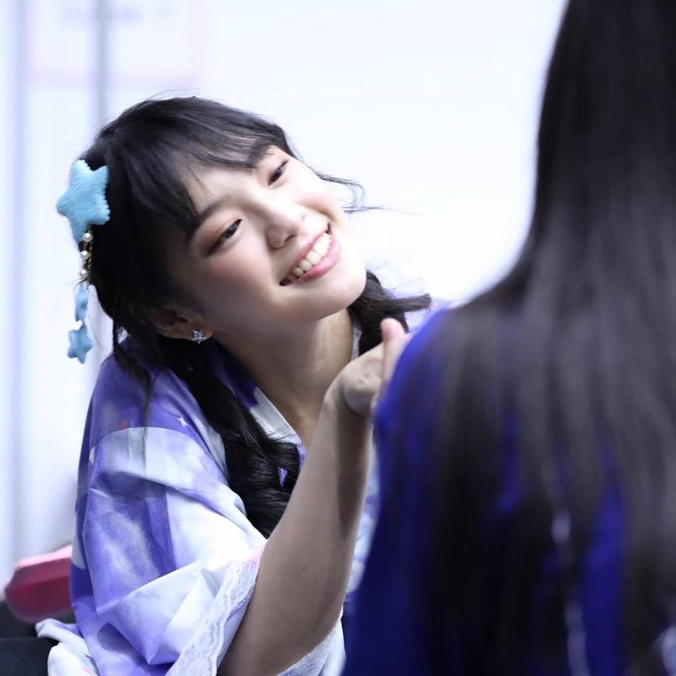
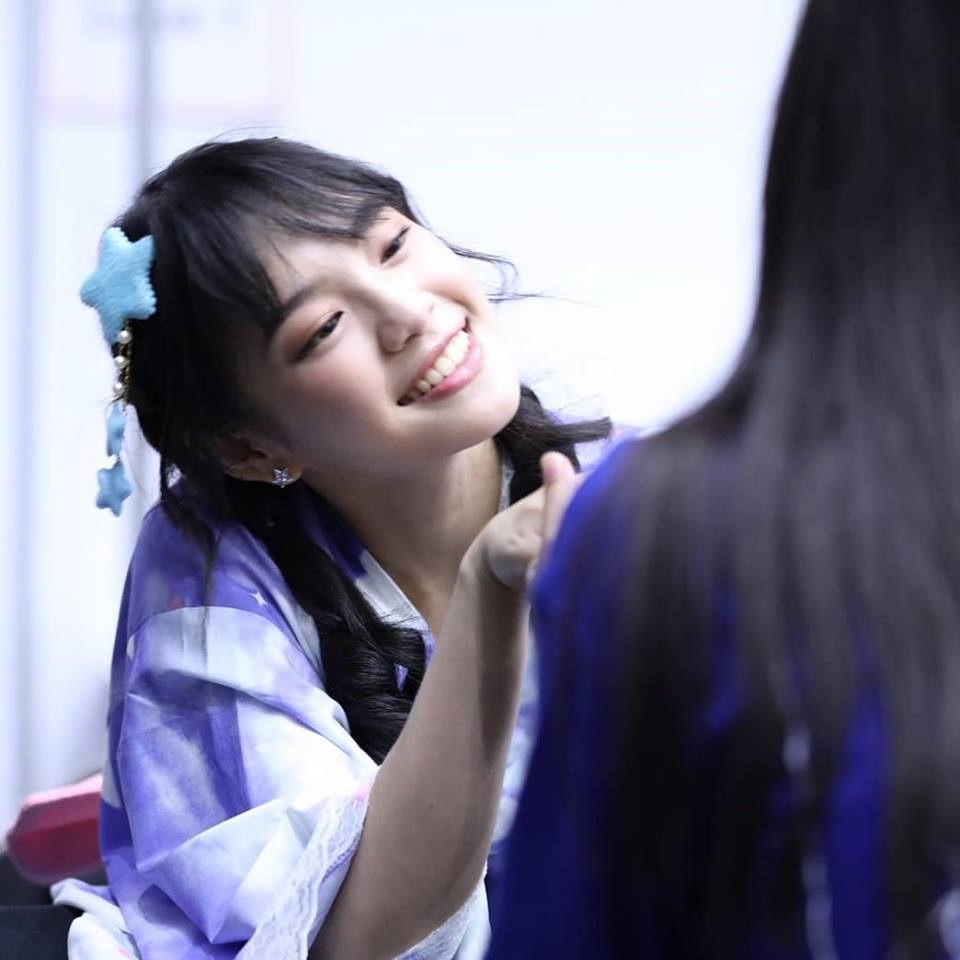

เฌอปรางมีแฟนกี่คน !?!
เฌอปรางมีแฟนกี่คน ในที่นี้หมายถึง Top fans หรือ แฟนตัวยง ในแอปพลิเคชัน Facebook(เฟซบุ๊ก)
CHERPRANG AREEKUL เฌอปราง อารีย์กุล
รู้จักกับ เฌอปราง BNK48
CHERPRANG AREEKUL
เฌอปราง อารีย์กุล Birthday 2 พฤษภาคม 2539 Favorite color สีขาว Like คอสเพลย์ อนิเมะญี่ปุ่น Hobby ดูหนัง อ่านหนังสือ ฟังเพลง
Cherprang BNK48
cherprang.bnk48official
พูดถึงแฟนตัวยงใน Facebook กันเถอะ!
แฟนตัวยงใน Facebook คืออะไร??
จากการค้นหาข้อมูลของพวกเราพบว่า แฟนตัวยง หรือ Top Fan เป็นฟีเจอร์ที่เฟสบุ๊คสร้างขึ้นมาให้กับแฟนพันธุ์แท้ของเพจต่างๆเพื่อบอกให้กับคนอื่นได้รับรู้ว่าบุคคลดังกล่าวเป็นแฟนตัวยง ทำให้ชื่อของคน คนนั้นเด่นขึ้น เมื่อมีการโพตส์หรือคอมเม้นท์ในเพจที่เป็นแฟนตัวยง
แล้วทำยังไงถึงจะได้เป็นแฟนตัวยงกันน้าาา??
ทำยังไงถึงจะได้เป็นแฟนตัวยง??
การเป็นแฟนตัวยงของเพจนั้นๆ ก็ไม่ใช้เรื่องยากอะไร แค่คุณมีส่วนร่วมกับโพสต์ต่างๆของเพจ ไม่ว่าจะเป็น การกดถูกใจ การแชร์ หรือการคอมเม้นท์ ประมาณว่ามีส่วนร่วมๆ เกือบทุกโพสต์ของเพจหรือทุกโพสต์ เมื่อถึงจำนวนที่ทางเฟสบุ๊คกำหนดว่าจะได้แฟนตัวยง คุณจะมีสัญลักษณ์ดาวและข้อความ “แฟนตัวยง” เหนือชื่อ ดังภาพนี้
แล้วทำไมเฌอปรางถึงมีแฟนตัวยงมากขนาดนั้นด้วยนะ?
หัวข้อปัญหา : เราอยากรู้ว่าทำไมเฌอปรางถึงมีแฟนตัวยงถึง 992 คน??
เริ่มแรกได้ทำการค้นข้อมูลเกี่ยวกับแฟนตัวยงของเฌอปราง 4 เดือนย้อนหลัง ตั้งแต่วันที่ 25 สิงหาคม - 25 พฤศจิกายน และนำมาเปรียบเทียบเป็นกราฟ เพื่อหาสมมติฐานที่เกิดขึ้นดังนี้
เริ่มวิเคราะห์ : นำกราฟแฟนตัวยงในเพจมาเปรียบเทียบเพื่อหาปัจจัยที่เกี่ยวข้อง
กราฟเปรียบเทียบจำนวนเพศหญิง และเพศชายที่เป็นแฟนตัวยง ภายในเพจ Cherprang BNK48
เปรียบเทียบจำนวนเพศหญิง - ชายในเพจ จากกราฟจะเห็นได้ว่า ร้อยละ 70.06 เป็นผู้ชาย และ 30.94 เป็นผู้หญิง จากกราฟนี้ทำให้เรารู้แค่ว่าเฌอปรางเป็นที่นิยมในหมู่เพศชายเป็นส่วนใหญ่ อืมมม แต่ผลลัพธ์ที่เราได้นั้นยังไม่มีน้ำหนักพอเพื่อสรุปว่าทำไมเฌอปรางถึงมีแฟนตัวยงเยอะขนาดนี้ งั้นเรามาลองดูข้อมูลแบบเจาะลึกมากกว่านี้
ตารางเปรียบเทียบจำนวนแฟนตัวยงในช่วง 4 เดือน (แยกชาย-หญิง)
กราฟแสดงจำนวนแฟนตัวยงในรอบ 4 เดือน
คิดเป็นผู้ชายร้อยละ 90.48 และผู้หญิง 9.52 จากแฟนตัวยงรวม 21 คน เดือนนี้แฟนคลับผู้ชายค่อนข้างท็อปฟอร์ม แต่ยังไม่เป็นที่นิยมในแฟนคลับผู้หญิง เราลองมาดูเดือนต่อไปกันดีกว่า
มาดูในช่วง 3 เดือนกันบ้าง~
ตารางเปรียบเทียบจำนวนแฟนตัวยงในช่วง 3 เดือน (แยกชาย-หญิง)
กราฟแสดงจำนวนแฟนตัวยงในรอบ 3 เดือน
คิดเป็นผู้ชายร้อยละ 80 และผู้หญิง 20 จากแฟนตัวยงรวม 25 คน เดือนนี้จะเห็นได้ว่าแฟนคลับทั้งผู้ชายแลัผู้หญิงมีการเพิ่มขึ้นค่อนข้างน้อย
มาดูในช่วง 2 เดือนกันบ้าง~
ตารางเปรียบเทียบจำนวนแฟนตัวยงในช่วง 2 เดือน (แยกชาย-หญิง)
กราฟแสดงจำนวนแฟนตัวยงในรอบ 2 เดือน
คิดเป็นผู้ชายร้อยละ 70.9 และผู้หญิง 29.1 จากแฟนตัวยงรวม 55 คน เดือนนี้จะเห็นได้ว่าแฟนคลับผู้หญิงเริ่มบทบาทในเพจมากกว่าเดือนที่แล้ว
มาดูในช่วงเดือนสุดท้ายกัน~
ตารางเปรียบเทียบจำนวนแฟนตัวยงในช่วง 1 เดือน (แยกชาย-หญิง)
กราฟแสดงจำนวนแฟนตัวยงในรอบ 1 เดือน
คิดเป็นผู้ชายร้อยละ 66.23 และผู้หญิง 33.77 จากแฟนตัวยงรวม 536 คน อือหือออ เดือนนี้แฟนตัวยงเพิ่มขึ้นแบบเห็นได้ชัด ถ้าเทียบกับจำนวนแฟนตัวยงทั้ง 4 เดือน
ดังนั้นจากตารางทำหมดที่มีตอนนี้ทำให้เราได้ข้อสรุปที่ว่าแฟนตัวยง
สมมติฐานแรก : แฟนตัวยงเพิ่มขึ้น เพราะว่าในช่วง 1 เดือนที่ผ่านมาเพจเฌอปรางได้รับความสนใจเป็นอย่างมาก
ตารางกิจกรรมช่วง 25 ตุลาคม - 25 พฤษจิกายน
จากตารางกิจกรรมทั้งหมด 9 กิจกรรมใรช่วง 1 เดือนที่ผ่านมา เราก็ยังไม่ได้ข้อสรุปอยู่ดีว่าทำไมเพจของเฌอปรางถึงได้รับความนิยมถึงขั้นมีแฟนตัวยงในเพจเยอะขนาดนี้
ดังนั้นเราจะมาลองเปรียบเทียบยอดไลค์กับยอดแชร์ของแต่ละโพ้สในช่วงกิจกรรม เพื่อหากิจกรรมที่ได้รับความสนใจในเพจมากที่สุดนี้กัน
ตารางไลค์
ตารางไลค์
จากตารางค์ยอดไลค์ เราสังเกตได้ว่าตั้งแต่วันที่ 25 ตุลาคม - 3 พฤศจิกายน ยอดไลค์ที่มีการเปลี่ยนแปลง
ตารางแชร์
ตารางแชร์
จากตารางค์ยอดแชร์ เราสังเกตได้ว่าตั้งแต่วันที่ 25 ตุลาคม - 3 พฤศจิกายน มียอดแชร์ที่มีการเปลี่ยนแปลง
อีกหนึ่งปัจจัยที่อาจจะส่งผลต่อการเพิ่มจำนวนของบแฟนตัวยง
อีกหนึ่งปัจจัยหนึ่งที่อาจจะส่งผลต่อการเพิ่มขึ้นของแฟนตัวยงมากที่สุด
สมมติฐานที่สาม : กิจกรรมในช่วงวันที่ 25 ตุลาคม - 3 พฤศจิกายน
เราจึงย้อนกลับไปดูในตารางกิจกรรมของในช่วงนั้น ทำให้เราได้พบว่ากิจกรรมในช่วงเวลาดังกล่าว
1.กิจกรรม Homestay Open The premiere : งานโปรโมทหนังของค่าย GDH เรื่อง Home Stay
โฮมสเตย์ (อังกฤษ: Homestay) เป็นภาพยนตร์ไทยแนวดราม่า-แฟนตาซี-ระทึกขวัญ
ข้อสรุป
อ้างอิงจากตัวแปรแรกการที่เฌอปรางได้เล่นหนังครั้งแรกทำให้ได้รับความคาดหวัง
2.กิจกรรม BNK48 4th Single Kimi wa Melody HandShake : งานจับมืออันโด่งดังของวง BNK48
งานจับมือคืออะไร? งานจับมือคือกิจกรรมที่ให้แฟนๆได้เดินเข้ามาจับมือกับไอดอลที่ตัวเองชื่นชอบพร้อมกับบอกความรู้สึกให้กำลังใจ คุยเล่น หรืออะไรก็แล้วแต่ตามเวลาที่กำหนดไว้ให้ซึ่งการที่จะจับมือสมาชิกวงไอดอลได้
ข้อสรุป
อ้างอิงจากตัวแปรแรก ด้วยกฏของวง BNK48 ที่ห้ามแฟนคลับถูกเนื้อต้องตัวเมมเบอร์
ข้อสรุปที่ได้
จากการศึกษาจำนวนแฟนตัวยงจากการเก็บข้อมูล ตั้งแต่วันที่ 25 สิงหาคม 2561 - 25 พฤศจิกายน 2561 ในเพจของ Cherprang BNK48 พบว่า
1. แฟนตัวยงของเพจ Cherprang BNK48 มีถึง 992 คน!
 Cherprang BNK48
Cherprang BNK48
 cherprang.bnk48official
cherprang.bnk48official
 Event Schedule 1
Event Schedule 1
 
